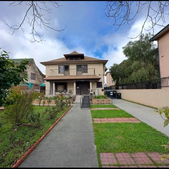
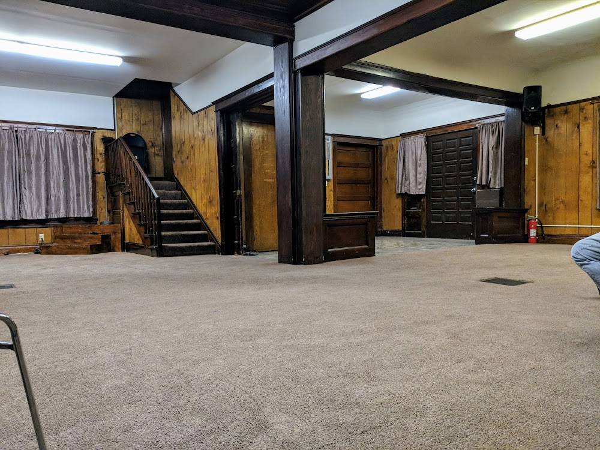
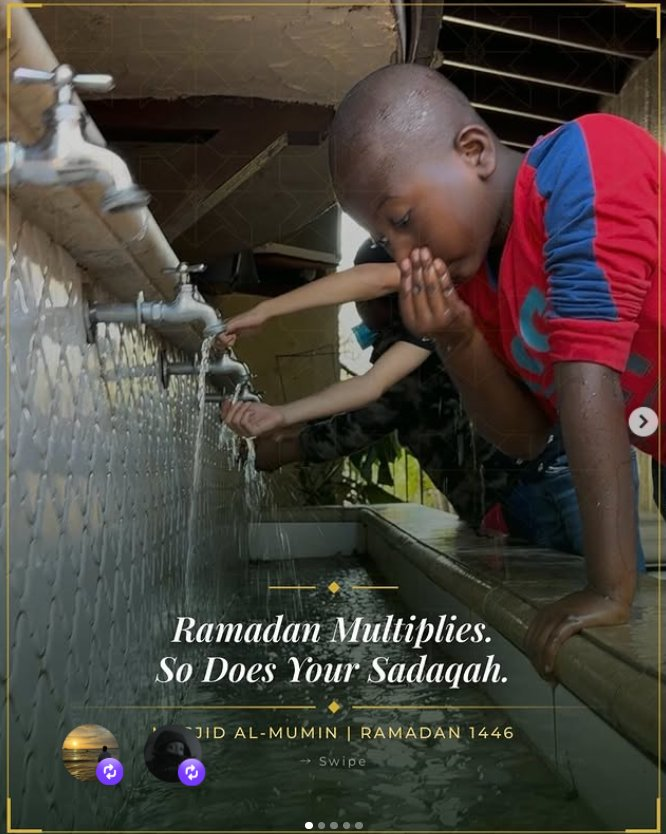

Our Masjid
A place of peace




A community masjid in Los Angeles grounded in the Qur'an, the Sunnah, and the methodology of the righteous predecessors.
Masjid Al-Mumin is a community masjid in Los Angeles, California. Our doors have been open for decades to every Muslim seeking prayer, knowledge, and community. Our approach is simple and consistent: follow the Qur'an and the authentic Sunnah upon the understanding of the Salaf al-Salih — the righteous predecessors of this ummah.
For over twenty years, our masjid was led by the late Sheikh Abu Mujaahid Fareed Abdullah — may Allah have mercy on him. A graduate of the Islamic University of Imam Muhammad Ibn Saud in Riyadh, a student of Sheikh Ibn Baz and Sheikh Ibn Uthaymeen, and a companion of Sheikh Muqbil Ibn Haadi al-Waadi'ee, Sheikh Fareed shaped the character of this masjid with his knowledge, humility, and steadfastness on the Sunnah.
His lessons on Tawheed, Hadith, and Fiqh formed generations of students. His quiet manners and attentiveness to the young and old alike set a standard that our community still aspires to. When he passed away in 1445 AH in his country of birth, he left behind a masjid built on a foundation of authentic knowledge.
Today, Masjid Al-Mumin continues that legacy. Our imam, Ibn Al-Farooq, leads the five daily prayers and Jumu'ah, and delivers regular classes on the Names and Attributes of Allah and on Qur'anic Arabic. Ustadh Dawood, a graduate of the Islamic University of Madinah, teaches Bulugh al-Maram twice weekly — the classic hadith collection of rulings by al-Hafidh Ibn Hajar al-Asqalani.
We run a weekend Islamic school for children, regular adult classes, a community iftar each Ramadan, and ongoing programs to serve the families of our community. Every effort is intended, by the permission of Allah, to be sadaqah jariyah — continuous charity that benefits this ummah in this life and the next.
Sheikh Abu Mujaahid Fareed Abdullah arrives in Los Angeles after graduating from the Islamic University of Imam Muhammad Ibn Saud. He becomes imam of Masjid Al-Mumin and begins his da'wah to Allah.
Sheikh Fareed meets with Sheikh Muqbil Ibn Haadi al-Waadi'ee during his visit to California for medical treatment. Sheikh Muqbil praises him and attests to his knowledge and virtue.
Sheikh Fareed teaches Tawheed, Hadith, and Fiqh at Masjid Al-Mumin for over twenty years. His impact reaches New York, Philadelphia, San Diego, West Africa, and Europe.
On the twenty-first of Al-Muharram, 1445, Sheikh Fareed passes away in the Bahamas at sixty-seven years of age — may Allah have vast mercy upon him and reward him for what he left behind.
Masjid Al-Mumin continues on the same path: authentic knowledge, daily prayer, weekend school, regular halaqat, and service to the Muslims of Los Angeles. Your support sustains this work.



Your support keeps the masjid open, the lights on, and the lessons flowing. Every dollar is an investment in the akhirah.